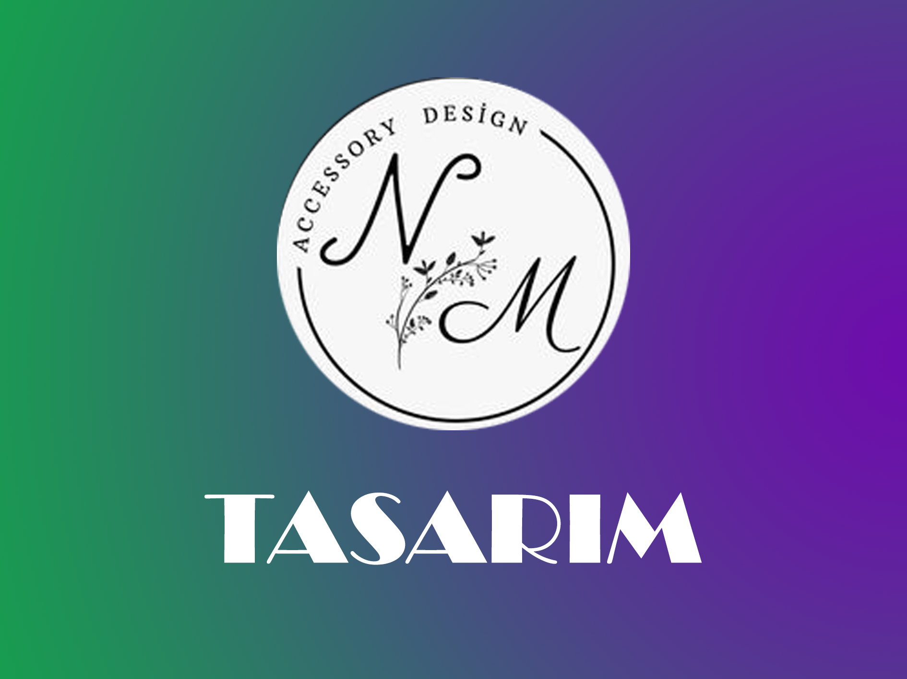

Kuvars, maneviyatı ve bilgeliği arttırır. Düşünce süreçlerini ve duyguları netleştirdiği için ilham ve yaratıcılığı artırabilir. Ayrıca konsantrasyon, çalışma ve öğrendiklerini akılda tutma konusunda da yardımcı olabilir. Kuvars kristali, şifalı bir taş olarak değer verilen bir güç taşıdır.
Pembe kuvars, kalp çakrasının taşıdır ve taşıyan kişiyi duygusal anlamda şifalandırır. Bulundurulduğu ortama sevgi, aşk, mutluluk ve huzur getirir. Olumsuz düşünceleri temizler, koşulsuz aşka yer açarak güçlenmesini sağlar. Romantik bağı teşvik eder.